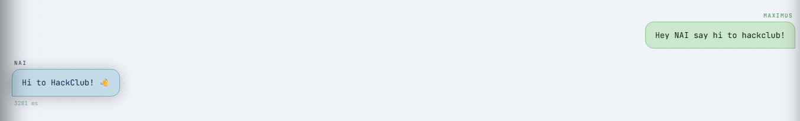

Hello my name is Maximus! I am 16 years old and finally, thanks to Hackclub, I am actually motivated to learn and make a ton of projects I kept dreaming and thinking about!
I *AM* in fact currently working on my personal AI assistant called NAI who is supposed to assist me with my day to day boring stuff so I can focus on making cool stuff, but that is my only project to
date that has survived longer than a week
Sadly tho most of NAI's code was written by AI which means I cant/dont want to add NAI to my stardance projects, and also I barely know what the code behind the scenes even does which is why I've
wanted to start learning for a while and thanks to Hackclub I finally will.

Now aside from working thinking about working on projects I really like to play video games and hang out with my friends. I also have a massive learning list I am trying to follow so that I can learn more advanced math, physics and other scientific (and non-scientific too!!) topics.
Along with that, I also really want to learn cooking, playing an instrument and so so much more, I really dont think I could ever specialize in anything.